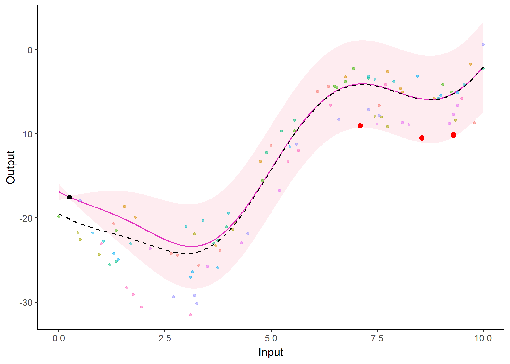

The MagmaClustR package implements two main algorithms, called Magma (Leroy et al., 2022) and MagmaClust (Leroy et al., 2020), using a multi-task Gaussian processes (GP) model to perform predictions for supervised learning problems. Applications involving functional data, such as multiple time series, are particularly well-handled. Theses approaches leverage the learning of cluster-specific mean processes, which are common across similar tasks, to provide enhanced prediction performances (even far from data points) at a linear computational cost (in the number of tasks). MagmaClust is a generalisation of Magma where the tasks are simultaneously clustered into groups, each being associated to a specific mean process. User-oriented functions in the package are decomposed into training, prediction and plotting functions. Some basic features of standard GPs are also implemented.
Leroy, A., Latouche, P., Guedj, B., Gey, S. MAGMA: inference and prediction using multi-task Gaussian processes with common mean. Mach Learn 111, 1821–1849 (2022). https://doi.org/10.1007/s10994-022-06172-1
Leroy, A., Latouche, P., Guedj, B., & Gey, S. Cluster-Specific Predictions with Multi-Task Gaussian Processes. arXiv preprint (2020). https://arxiv.org/abs/2011.07866
Installation
You can install the released version of MagmaClustR from CRAN with:
install.packages("MagmaClustR")And the development version from GitHub with:
# install.packages("devtools")
devtools::install_github("ArthurLeroy/MagmaClustR")Example: Magma
Here is a basic example on how to simulate a dataset with the adequate format, then train a Magma model and use it to perform predictions.
Data generation
library(MagmaClustR)
## Simulate a dataset with 11 individuals, each observed at 10 input locations
set.seed(2)
data_magma <- simu_db(M = 11, N = 10, common_input = FALSE)
## Split individuals into training and prediction sets, and define test points
magma_train <- data_magma %>% subset(ID %in% 1:10)
magma_pred <- data_magma %>% subset(ID == 11) %>% head(5)
magma_test <- data_magma %>% subset(ID == 11) %>% tail(5)
data_magma
#> # A tibble: 110 x 3
#> ID Output Input
#> <chr> <dbl> <dbl>
#> 1 1 1.52 1.9
#> 2 1 -5.76 3.3
#> 3 1 -3.78 3.35
#> 4 1 7.23 5.25
#> 5 1 14.9 6.2
#> 6 1 7.48 7.4
#> 7 1 7.21 8.15
#> 8 1 11.5 8.2
#> 9 1 13.1 8.9
#> 10 1 8.72 9.5
#> # ... with 100 more rowsTraining and prediction with Magma
model <- train_magma(data = magma_train)
#> The 'prior_mean' argument has not been specified. The hyper_prior mean function is thus set to be 0 everywhere.
#>
#> The 'ini_hp_0' argument has not been specified. Random values of hyper-parameters for the mean process are used as initialisation.
#>
#> The 'ini_hp_i' argument has not been specified. Random values of hyper-parameters for the individal processes are used as initialisation.
#>
#> EM algorithm, step 1: 8.32 seconds
#>
#> Value of the likelihood: -380.13237 --- Convergence ratio = Inf
#>
#> EM algorithm, step 2: 4.27 seconds
#>
#> Value of the likelihood: -374.41417 --- Convergence ratio = 0.01527
#>
#> EM algorithm, step 3: 3.77 seconds
#>
#> Value of the likelihood: -374.17355 --- Convergence ratio = 0.00064
#>
#> The EM algorithm successfully converged, training is completed.
#>
pred <- pred_magma(data = magma_pred,
trained_model = model,
grid_inputs = seq(0,10, 0.01))
#> The hyper-posterior distribution of the mean process provided in 'hyperpost' argument isn't evaluated on the expected inputs.
#>
#> Start evaluating the hyper-posterior on the correct inputs...
#>
#> The 'prior_mean' argument has not been specified. The hyper-prior mean function is thus set to be 0 everywhere.
#>
#> Done!
#> 
Note that the grid_inputs argument is optional. It merely allows users to control the grid of values on which the prediction is performed.
Display the resulting predictions
Several arguments are available in a specific plotting function to offer additional control in the display of results. For instance, the GP prediction can be represented as a heatmap of probabilities:
plot_gp(pred_gp = pred,
data = magma_pred,
data_train = magma_train,
prior_mean = model$hyperpost$mean,
heatmap = TRUE) 
Additionally, it is also possible to create animated representations by using functions that generate GIFs. For instance, below, the true testing points have been represented as red dots and we can observe how the prediction evolves as we add more data points to our prediction dataset.
pred_gif <- pred_gif(data = magma_pred,
trained_model = model,
grid_inputs = seq(0, 10, 0.01))
#> => 1 => 2 => 3 => 4 => 5
plot_gif(pred_gp = pred_gif,
data = magma_pred,
data_train = magma_train,
prior_mean = model$hyperpost$mean) +
ggplot2::geom_point(data = magma_test,
ggplot2::aes(x = Input, y = Output),
color = 'red')
Note that the grid_inputs argument is optional. It merely allows users to control the grid of values on which the prediction is performed.
Example: MagmaClust
Here is a basic example on how to simulate a dataset with the adequate format, then train a MagmaClust model and use it to perform simultaneous clustering and predictions.
Data generation
## Simulate a dataset containing 3 clusters of 4 individuals, each observed at 10 input locations
set.seed(2)
data_magmaclust <- simu_db(M = 4, N = 10, K = 3)
## Split individuals into training and prediction sets, and define test points
list_ID = unique(data_magmaclust$ID)
magmaclust_train <- data_magmaclust %>% subset(ID %in% list_ID[1:11])
magmaclust_pred <- data_magmaclust %>% subset(ID == list_ID[12]) %>% head(5)
magmaclust_test <- data_magmaclust %>% subset(ID == list_ID[12]) %>% tail(5)
data_magmaclust
#> # A tibble: 120 x 3
#> ID Output Input
#> <chr> <dbl> <dbl>
#> 1 ID1-Clust1 -11.1 0.25
#> 2 ID1-Clust1 -7.64 0.8
#> 3 ID1-Clust1 -4.91 2
#> 4 ID1-Clust1 -13.2 4.2
#> 5 ID1-Clust1 -14.3 4.6
#> 6 ID1-Clust1 -13.0 6.2
#> 7 ID1-Clust1 -14.1 6.75
#> 8 ID1-Clust1 -20.3 7.95
#> 9 ID1-Clust1 -14.5 8.85
#> 10 ID1-Clust1 -12.2 9.85
#> # ... with 110 more rowsTraining and prediction with MagmaClust
model_clust <- train_magmaclust(data = magmaclust_train)
#> The number of cluster argument has not been specified. There will be 3 cluster by default.
#>
#> The 'ini_hp_i' argument has not been specified. Random values of hyper-parameters for the individual processes are used as initialisation.
#>
#> The 'ini_hp_k' argument has not been specified. Random values of hyper-parameters for the mean processes are used as initialisation.
#>
#> The 'prior_mean' argument has not been specified. The hyper_prior mean function is thus set to be 0 everywhere.
#>
#> VEM algorithm, step 1: 33.26 seconds
#>
#> Value of the elbo: -403.86908 --- Convergence ratio = Inf
#>
#> VEM algorithm, step 2: 12.95 seconds
#>
#> Value of the elbo: -383.34766 --- Convergence ratio = 0.05353
#>
#> VEM algorithm, step 3: 11.17 seconds
#>
#> Value of the elbo: -383.08838 --- Convergence ratio = 0.00068
#>
#> The EM algorithm successfully converged, training is completed.
#>
pred_clust <- pred_magmaclust(data = magmaclust_pred,
trained_model = model_clust,
grid_inputs = seq(0, 10, 0.01),
plot = FALSE)
#> The hyper-posterior distribution of the mean process provided in 'hyperpost' argument isn't evaluated on the expected inputs. Start evaluating the hyper-posterior on the correct inputs...
#>
#> The 'prior_mean_k' argument has not been specified. The hyper-prior mean functions are thus set to be 0 everywhere.
#>
#> Done!
#> Display the resulting predictions
As before, a specific plotting function is provided. For MagmaClust, we advise to use the heatmap representation in priority, as a mixture of GPs may not be unimodal in general (and thus prevents the definition of Credible Interval).
## Allocate individuals to their most probable cluster to colour them by clusters afterwards
data_train_with_clust = data_allocate_cluster(model_clust)
plot_magmaclust(pred = pred_clust,
cluster = "all",
data = magmaclust_pred,
data_train = data_train_with_clust,
col_clust = TRUE,
prior_mean = model_clust$hyperpost$mean,
y_grid = seq(0, 60, 0.5),
heatmap = TRUE) 
Example: in 2-dimensions
Although unidimensional-input problems are easier to visualise, both Magma and MagmaClust can also be applied with as many covariates as desired in the model.
Data generation
library(MagmaClustR)
## Dataset with 11 individuals, 10 reference input locations and a covariate
set.seed(2)
data_dim2 <- simu_db(M = 11, N = 10, covariate = TRUE)
## Split individuals into training and prediction sets, and define test points
dim2_train <- data_dim2 %>% subset(ID %in% 1:10)
dim2_pred <- data_dim2 %>% subset(ID == 11) %>% head(5)
dim2_test <- data_dim2 %>% subset(ID == 11) %>% tail(5)
data_dim2
#> # A tibble: 110 x 4
#> ID Output Input Covariate
#> <chr> <dbl> <dbl> <dbl>
#> 1 1 -11.1 0.25 -2
#> 2 1 -7.64 0.8 1.94
#> 3 1 -4.91 2 4.64
#> 4 1 -13.2 4.2 -3.7
#> 5 1 -14.3 4.6 -4.24
#> 6 1 -13.0 6.2 0.68
#> 7 1 -14.1 6.75 0.55
#> 8 1 -20.3 7.95 -4.38
#> 9 1 -14.5 8.85 1.74
#> 10 1 -12.2 9.85 4.14
#> # ... with 100 more rowsTraining and prediction with Magma
model_dim2 <- train_magma(data = dim2_train)
#> The 'prior_mean' argument has not been specified. The hyper_prior mean function is thus set to be 0 everywhere.
#>
#> The 'ini_hp_0' argument has not been specified. Random values of hyper-parameters for the mean process are used as initialisation.
#>
#> The 'ini_hp_i' argument has not been specified. Random values of hyper-parameters for the individal processes are used as initialisation.
#>
#> EM algorithm, step 1: 6.89 seconds
#>
#> Value of the likelihood: -243.2537 --- Convergence ratio = Inf
#>
#> EM algorithm, step 2: 7.36 seconds
#>
#> Value of the likelihood: -232.0084 --- Convergence ratio = 0.04847
#>
#> EM algorithm, step 3: 7.09 seconds
#>
#> Value of the likelihood: -231.63152 --- Convergence ratio = 0.00163
#>
#> EM algorithm, step 4: 3.43 seconds
#>
#> Value of the likelihood: -231.61322 --- Convergence ratio = 8e-05
#>
#> The EM algorithm successfully converged, training is completed.
#>
pred_dim2 <- pred_magma(data = dim2_pred,
trained_model = model_dim2)
#> The hyper-posterior distribution of the mean process provided in 'hyperpost' argument isn't evaluated on the expected inputs.
#>
#> Start evaluating the hyper-posterior on the correct inputs...
#>
#> The 'prior_mean' argument has not been specified. The hyper-prior mean function is thus set to be 0 everywhere.
#>
#> Done!
#>